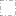

<!doctype html>
<html lang="en">
    <head>
        <meta charset="utf-8">
        <meta http-equiv="X-UA-Compatible" content="IE=edge">
        <meta name="viewport" content="initial-scale=1,user-scalable=no,maximum-scale=1,width=device-width">
        <meta name="mobile-web-app-capable" content="yes">
        <meta name="apple-mobile-web-app-capable" content="yes">
        <link rel="stylesheet" href="css/leaflet.css">
        <link rel="stylesheet" href="css/L.Control.Layers.Tree.css">
        <link rel="stylesheet" href="css/qgis2web.css">
        <link rel="stylesheet" href="css/fontawesome-all.min.css">
        <link rel="stylesheet" href="css/leaflet-control-geocoder.Geocoder.css">
        <link rel="stylesheet" href="css/leaflet-measure.css">
        <style>
        #map {
            width: 1481px;
            height: 778px;
        }
        </style>
        <title>Open-Source Cloud-based Flood Risk Mapping: A Case in Maribyrnong and Moonee Valley </title>
    </head>
    <body>
        <div id="map">
        </div>
        <script src="js/qgis2web_expressions.js"></script>
        <script src="js/leaflet.js"></script>
        <script src="js/L.Control.Layers.Tree.min.js"></script>
        <script src="js/leaflet.rotatedMarker.js"></script>
        <script src="js/leaflet.pattern.js"></script>
        <script src="js/leaflet-hash.js"></script>
        <script src="js/Autolinker.min.js"></script>
        <script src="js/rbush.min.js"></script>
        <script src="js/labelgun.min.js"></script>
        <script src="js/labels.js"></script>
        <script src="js/leaflet-control-geocoder.Geocoder.js"></script>
        <script src="js/leaflet-measure.js"></script>
        <script src="data/FloodRiskAssessment_1.js"></script>
        <script src="data/Flood_2.js"></script>
        <script src="data/SA2Boundary_3.js"></script>
        <script>
        var highlightLayer;
        function highlightFeature(e) {
            highlightLayer = e.target;

            if (e.target.feature.geometry.type === 'LineString' || e.target.feature.geometry.type === 'MultiLineString') {
              highlightLayer.setStyle({
                color: '#ffff00',
              });
            } else {
              highlightLayer.setStyle({
                fillColor: '#ffff00',
                fillOpacity: 1
              });
            }
        }
        var map = L.map('map', {
            zoomControl:true, maxZoom:28, minZoom:1
        }).fitBounds([[-37.833377278892264,144.75485564999332],[-37.698503427599896,145.07835872055603]]);
        var hash = new L.Hash(map);
        map.attributionControl.setPrefix('<a href="https://github.com/tomchadwin/qgis2web" target="_blank">qgis2web</a> &middot; <a href="https://leafletjs.com" title="A JS library for interactive maps">Leaflet</a> &middot; <a href="https://qgis.org">QGIS</a>');
        var autolinker = new Autolinker({truncate: {length: 30, location: 'smart'}});
        function removeEmptyRowsFromPopupContent(content, feature) {
         var tempDiv = document.createElement('div');
         tempDiv.innerHTML = content;
         var rows = tempDiv.querySelectorAll('tr');
         for (var i = 0; i < rows.length; i++) {
             var td = rows[i].querySelector('td.visible-with-data');
             var key = td ? td.id : '';
             if (td && td.classList.contains('visible-with-data') && feature.properties[key] == null) {
                 rows[i].parentNode.removeChild(rows[i]);
             }
         }
         return tempDiv.innerHTML;
        }
        document.querySelector(".leaflet-popup-pane").addEventListener("load", function(event) {
          var tagName = event.target.tagName,
            popup = map._popup;
          // Also check if flag is already set.
          if (tagName === "IMG" && popup && !popup._updated) {
            popup._updated = true; // Set flag to prevent looping.
            popup.update();
          }
        }, true);
        var measureControl = new L.Control.Measure({
            position: 'topleft',
            primaryLengthUnit: 'meters',
            secondaryLengthUnit: 'kilometers',
            primaryAreaUnit: 'sqmeters',
            secondaryAreaUnit: 'hectares'
        });
        measureControl.addTo(map);
        document.getElementsByClassName('leaflet-control-measure-toggle')[0]
        .innerHTML = '';
        document.getElementsByClassName('leaflet-control-measure-toggle')[0]
        .className += ' fas fa-ruler';
        var bounds_group = new L.featureGroup([]);
        function setBounds() {
        }
        map.createPane('pane_OSMStandard_0');
        map.getPane('pane_OSMStandard_0').style.zIndex = 400;
        var layer_OSMStandard_0 = L.tileLayer('http://tile.openstreetmap.org/{z}/{x}/{y}.png', {
            pane: 'pane_OSMStandard_0',
            opacity: 0.653,
            attribution: '<a href="https://www.openstreetmap.org/copyright">© OpenStreetMap contributors, CC-BY-SA</a>',
            minZoom: 1,
            maxZoom: 28,
            minNativeZoom: 0,
            maxNativeZoom: 19
        });
        layer_OSMStandard_0;
        map.addLayer(layer_OSMStandard_0);
        function pop_FloodRiskAssessment_1(feature, layer) {
            layer.on({
                mouseout: function(e) {
                    for (var i in e.target._eventParents) {
                        if (typeof e.target._eventParents[i].resetStyle === 'function') {
                            e.target._eventParents[i].resetStyle(e.target);
                        }
                    }
                },
                mouseover: highlightFeature,
            });
            var popupContent = '<table>\
                    <tr>\
                        <th scope="row">SA1 Code</th>\
                        <td class="visible-with-data" id="SA1 Code">' + (feature.properties['SA1 Code'] !== null ? autolinker.link(feature.properties['SA1 Code'].toLocaleString()) : '') + '</td>\
                    </tr>\
                    <tr>\
                        <th scope="row">SA2 Name</th>\
                        <td class="visible-with-data" id="SA2 Name">' + (feature.properties['SA2 Name'] !== null ? autolinker.link(feature.properties['SA2 Name'].toLocaleString()) : '') + '</td>\
                    </tr>\
                    <tr>\
                        <th scope="row">Flood Risk Level</th>\
                        <td class="visible-with-data" id="Flood Risk Level">' + (feature.properties['Flood Risk Level'] !== null ? autolinker.link(feature.properties['Flood Risk Level'].toLocaleString()) : '') + '</td>\
                    </tr>\
                </table>';
            layer.bindPopup(popupContent, {maxHeight: 400});
            var popup = layer.getPopup();
            var content = popup.getContent();
            var updatedContent = removeEmptyRowsFromPopupContent(content, feature);
            popup.setContent(updatedContent);
        }

        function style_FloodRiskAssessment_1_0(feature) {
            switch(String(feature.properties['risklevel'])) {
                case 'Very Low':
                    return {
                pane: 'pane_FloodRiskAssessment_1',
                opacity: 1,
                color: 'rgba(167,167,167,1.0)',
                dashArray: '',
                lineCap: 'butt',
                lineJoin: 'miter',
                weight: 1.0, 
                fill: true,
                fillOpacity: 1,
                fillColor: 'rgba(255,245,240,1.0)',
                interactive: true,
            }
                    break;
                case 'Low':
                    return {
                pane: 'pane_FloodRiskAssessment_1',
                opacity: 1,
                color: 'rgba(167,167,167,1.0)',
                dashArray: '',
                lineCap: 'butt',
                lineJoin: 'miter',
                weight: 1.0, 
                fill: true,
                fillOpacity: 1,
                fillColor: 'rgba(252,190,165,1.0)',
                interactive: true,
            }
                    break;
                case 'Moderate':
                    return {
                pane: 'pane_FloodRiskAssessment_1',
                opacity: 1,
                color: 'rgba(167,167,167,1.0)',
                dashArray: '',
                lineCap: 'butt',
                lineJoin: 'miter',
                weight: 1.0, 
                fill: true,
                fillOpacity: 1,
                fillColor: 'rgba(251,112,80,1.0)',
                interactive: true,
            }
                    break;
                case 'High':
                    return {
                pane: 'pane_FloodRiskAssessment_1',
                opacity: 1,
                color: 'rgba(167,167,167,1.0)',
                dashArray: '',
                lineCap: 'butt',
                lineJoin: 'miter',
                weight: 1.0, 
                fill: true,
                fillOpacity: 1,
                fillColor: 'rgba(211,32,32,1.0)',
                interactive: true,
            }
                    break;
                case 'Very High':
                    return {
                pane: 'pane_FloodRiskAssessment_1',
                opacity: 1,
                color: 'rgba(167,167,167,1.0)',
                dashArray: '',
                lineCap: 'butt',
                lineJoin: 'miter',
                weight: 1.0, 
                fill: true,
                fillOpacity: 1,
                fillColor: 'rgba(103,0,13,1.0)',
                interactive: true,
            }
                    break;
            }
        }
        map.createPane('pane_FloodRiskAssessment_1');
        map.getPane('pane_FloodRiskAssessment_1').style.zIndex = 401;
        map.getPane('pane_FloodRiskAssessment_1').style['mix-blend-mode'] = 'normal';
        var layer_FloodRiskAssessment_1 = new L.geoJson(json_FloodRiskAssessment_1, {
            attribution: '',
            interactive: true,
            dataVar: 'json_FloodRiskAssessment_1',
            layerName: 'layer_FloodRiskAssessment_1',
            pane: 'pane_FloodRiskAssessment_1',
            onEachFeature: pop_FloodRiskAssessment_1,
            style: style_FloodRiskAssessment_1_0,
        });
        bounds_group.addLayer(layer_FloodRiskAssessment_1);
        map.addLayer(layer_FloodRiskAssessment_1);
        function pop_Flood_2(feature, layer) {
            layer.on({
                mouseout: function(e) {
                    for (var i in e.target._eventParents) {
                        if (typeof e.target._eventParents[i].resetStyle === 'function') {
                            e.target._eventParents[i].resetStyle(e.target);
                        }
                    }
                },
                mouseover: highlightFeature,
            });
            var popupContent = '<table>\
                    <tr>\
                        <th scope="row">SA1 Code</th>\
                        <td class="visible-with-data" id="SA1 Code">' + (feature.properties['SA1 Code'] !== null ? autolinker.link(feature.properties['SA1 Code'].toLocaleString()) : '') + '</td>\
                    </tr>\
                    <tr>\
                        <th scope="row">SA2 Name</th>\
                        <td class="visible-with-data" id="SA2 Name">' + (feature.properties['SA2 Name'] !== null ? autolinker.link(feature.properties['SA2 Name'].toLocaleString()) : '') + '</td>\
                    </tr>\
                    <tr>\
                        <th scope="row">Flooded Area (sq.m.)</th>\
                        <td class="visible-with-data" id="Flooded Area (sq.m.)">' + (feature.properties['Flooded Area (sq.m.)'] !== null ? autolinker.link(feature.properties['Flooded Area (sq.m.)'].toLocaleString()) : '') + '</td>\
                    </tr>\
                </table>';
            layer.bindPopup(popupContent, {maxHeight: 400});
            var popup = layer.getPopup();
            var content = popup.getContent();
            var updatedContent = removeEmptyRowsFromPopupContent(content, feature);
            popup.setContent(updatedContent);
        }

        function style_Flood_2_0() {
            return {
                pane: 'pane_Flood_2',
                opacity: 1,
                color: 'rgba(136,136,136,1.0)',
                dashArray: '',
                lineCap: 'butt',
                lineJoin: 'miter',
                weight: 1.0, 
                fill: true,
                fillOpacity: 1,
                fillColor: 'rgba(107,187,227,1.0)',
                interactive: true,
            }
        }
        map.createPane('pane_Flood_2');
        map.getPane('pane_Flood_2').style.zIndex = 402;
        map.getPane('pane_Flood_2').style['mix-blend-mode'] = 'normal';
        var layer_Flood_2 = new L.geoJson(json_Flood_2, {
            attribution: '',
            interactive: true,
            dataVar: 'json_Flood_2',
            layerName: 'layer_Flood_2',
            pane: 'pane_Flood_2',
            onEachFeature: pop_Flood_2,
            style: style_Flood_2_0,
        });
        bounds_group.addLayer(layer_Flood_2);
        map.addLayer(layer_Flood_2);
        function pop_SA2Boundary_3(feature, layer) {
            layer.on({
                mouseout: function(e) {
                    for (var i in e.target._eventParents) {
                        if (typeof e.target._eventParents[i].resetStyle === 'function') {
                            e.target._eventParents[i].resetStyle(e.target);
                        }
                    }
                },
                mouseover: highlightFeature,
            });
            var popupContent = '<table>\
                    <tr>\
                        <th scope="row">SA2 Name</th>\
                        <td class="visible-with-data" id="SA2 Name">' + (feature.properties['SA2 Name'] !== null ? autolinker.link(feature.properties['SA2 Name'].toLocaleString()) : '') + '</td>\
                    </tr>\
                    <tr>\
                        <th scope="row">Area (sq.km.)</th>\
                        <td class="visible-with-data" id="Area (sq.km.)">' + (feature.properties['Area (sq.km.)'] !== null ? autolinker.link(feature.properties['Area (sq.km.)'].toLocaleString()) : '') + '</td>\
                    </tr>\
                    <tr>\
                        <th scope="row">SA2_Code</th>\
                        <td class="visible-with-data" id="SA2_Code">' + (feature.properties['SA2_Code'] !== null ? autolinker.link(feature.properties['SA2_Code'].toLocaleString()) : '') + '</td>\
                    </tr>\
                </table>';
            layer.bindPopup(popupContent, {maxHeight: 400});
            var popup = layer.getPopup();
            var content = popup.getContent();
            var updatedContent = removeEmptyRowsFromPopupContent(content, feature);
            popup.setContent(updatedContent);
        }

        function style_SA2Boundary_3_0() {
            return {
                pane: 'pane_SA2Boundary_3',
                opacity: 1,
                color: 'rgba(35,35,35,1.0)',
                dashArray: '10.0,2.0,4.0,2.0',
                lineCap: 'butt',
                lineJoin: 'miter',
                weight: 2.0, 
                fill: true,
                fillOpacity: 1,
                fillColor: 'rgba(152,125,183,0.0)',
                interactive: true,
            }
        }
        map.createPane('pane_SA2Boundary_3');
        map.getPane('pane_SA2Boundary_3').style.zIndex = 403;
        map.getPane('pane_SA2Boundary_3').style['mix-blend-mode'] = 'normal';
        var layer_SA2Boundary_3 = new L.geoJson(json_SA2Boundary_3, {
            attribution: '',
            interactive: true,
            dataVar: 'json_SA2Boundary_3',
            layerName: 'layer_SA2Boundary_3',
            pane: 'pane_SA2Boundary_3',
            onEachFeature: pop_SA2Boundary_3,
            style: style_SA2Boundary_3_0,
        });
        bounds_group.addLayer(layer_SA2Boundary_3);
        map.addLayer(layer_SA2Boundary_3);
            var title = new L.Control();
            title.onAdd = function (map) {
                this._div = L.DomUtil.create('div', 'info');
                this.update();
                return this._div;
            };
            title.update = function () {
                this._div.innerHTML = '<h2>Open-Source Cloud-based Flood Risk Mapping: A Case in Maribyrnong and Moonee Valley </h2>';
            };
            title.addTo(map);
        var osmGeocoder = new L.Control.Geocoder({
            collapsed: true,
            position: 'topleft',
            text: 'Search',
            title: 'Testing'
        }).addTo(map);
        document.getElementsByClassName('leaflet-control-geocoder-icon')[0]
        .className += ' fa fa-search';
        document.getElementsByClassName('leaflet-control-geocoder-icon')[0]
        .title += 'Search for a place';
        var baseMaps = {};
        var overlaysTree = [
            {label: ' SA2 Boundary', layer: layer_SA2Boundary_3},
            {label: ' Flood', layer: layer_Flood_2},
            {label: 'Flood Risk Assessment<br /><table><tr><td style="text-align: center;"></td><td>Very Low</td></tr><tr><td style="text-align: center;"></td><td>Low</td></tr><tr><td style="text-align: center;"></td><td>Moderate</td></tr><tr><td style="text-align: center;"></td><td>High</td></tr><tr><td style="text-align: center;"></td><td>Very High</td></tr></table>', layer: layer_FloodRiskAssessment_1},
            {label: "OSM Standard", layer: layer_OSMStandard_0},]
        var lay = L.control.layers.tree(null, overlaysTree,{
            //namedToggle: true,
            //selectorBack: false,
            //closedSymbol: '&#8862; &#x1f5c0;',
            //openedSymbol: '&#8863; &#x1f5c1;',
            //collapseAll: 'Collapse all',
            //expandAll: 'Expand all',
            collapsed: true,
        });
        lay.addTo(map);
        setBounds();
        var i = 0;
        layer_SA2Boundary_3.eachLayer(function(layer) {
            var context = {
                feature: layer.feature,
                variables: {}
            };
            layer.bindTooltip((layer.feature.properties['SA2 Name'] !== null?String('<div style="color: #232323; font-size: 8pt; font-style: italic; font-family: \'Arial\', sans-serif;">' + layer.feature.properties['SA2 Name']) + '</div>':''), {permanent: true, offset: [-0, -16], className: 'css_SA2Boundary_3'});
            labels.push(layer);
            totalMarkers += 1;
              layer.added = true;
              addLabel(layer, i);
              i++;
        });
        resetLabels([layer_FloodRiskAssessment_1,layer_SA2Boundary_3]);
        map.on("zoomend", function(){
            resetLabels([layer_FloodRiskAssessment_1,layer_SA2Boundary_3]);
        });
        map.on("layeradd", function(){
            resetLabels([layer_FloodRiskAssessment_1,layer_SA2Boundary_3]);
        });
        map.on("layerremove", function(){
            resetLabels([layer_FloodRiskAssessment_1,layer_SA2Boundary_3]);
        });
        </script>
    </body>
</html>
